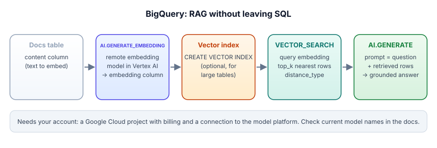

BigQuery and Gemini: RAG without leaving SQL
On GCP you can embed a table, search it by meaning and generate a grounded answer, all as BigQuery SQL. This lesson maps the RAG pipeline from Track 3 onto three BigQuery functions, with the exact syntax from the docs and the parts that need your account called out.
Everything on this page runs in a Google Cloud project with billing enabled and a connection to Google's model platform. The BigQuery docs (read 2026-11-03) describe model charges in the platform's own billing, so the no-card BigQuery sandbox is unlikely to cover these calls (⚠ unverified: check before you rely on it). The local stand-in that always works is labs/10_ai_sql_udf.py. We did not run the SQL below against a live project.
Three functions cover the RAG path. AI.GENERATE_EMBEDDING is a table function that turns a content column into an embedding column using a remote embedding model. VECTOR_SEARCH finds the nearest rows to a query embedding and returns them with a distance. AI.GENERATE sends a prompt (built from the question plus the retrieved rows) to a Gemini model and returns the answer. The docs name the model platform "Gemini Enterprise Agent Platform" in places and still say Vertex AI in others; it is the same managed model service.
BigQuery RAG is like a school library where every book already has a sticky note saying what it is about. When you ask a question, the librarian writes your question on a sticky note too, finds the books whose notes are most alike, and hands those pages to a helper who writes your answer using only them. The analogy breaks because the sticky notes are lists of numbers, not words, so two books can look alike to the librarian for reasons no human would pick.

Step 1: generate text. The docs' own first example summarises public BBC articles; with no endpoint argument BigQuery picks a recent stable Gemini model (the docs list gemini-3.5-flash-lite as the default on 2026-11-03):
SELECT
title,
AI.GENERATE(CONCAT("Summarize in one sentence: ", body)).result AS article_summary
FROM `bigquery-public-data.bbc_news.fulltext`
LIMIT 3;Step 2: embed your chunks once. The input must have a STRING column called content; the output adds embedding (ARRAY<FLOAT64>). kb.text_embedding is a remote model you create over a Google embedding model:
CREATE OR REPLACE TABLE kb.chunk_emb AS
SELECT * FROM AI.GENERATE_EMBEDDING(
MODEL `kb.text_embedding`,
(SELECT chunk_id, text AS content FROM kb.chunks));Step 3: retrieve. VECTOR_SEARCH takes the base table, the column to search and a query table, and returns query, base and distance:
SELECT base.chunk_id, base.content, distance
FROM VECTOR_SEARCH(
TABLE kb.chunk_emb, 'embedding',
(SELECT embedding FROM AI.GENERATE_EMBEDDING(MODEL `kb.text_embedding`,
(SELECT 'How long do card refunds take?' AS content))),
top_k => 3, distance_type => 'COSINE');Step 4: generate a grounded answer. Concatenate the retrieved content into the prompt with an instruction to answer only from it and cite chunk_id (exactly the grounded prompt from Lesson 3.7), and pass it to AI.GENERATE. Use output_schema when you want typed fields back instead of prose.
Your other columns, such as chunk_id, come through: the docs say the function "returns the input table and the following columns" (embedding, plus statistics and status for text models), per the AI.GENERATE_EMBEDDING reference.
Assumptions (scenario): 150,000 policy documents split into 3 M chunks of about 300 tokens; 2% of documents change each week; 20,000 questions a day.
- Initial embedding. 3 M chunks x 300 tokens = 900 M tokens through AI.GENERATE_EMBEDDING, run once as a batch job into kb.chunk_emb.
- Weekly refresh. 2% of 150,000 documents = 3,000 documents, about 60,000 chunks: re-embed only those, keyed on a content hash. That is 2% of the original work.
- Search. Brute force compares each question with 3 M vectors: 20,000 x 3 M = 60 B comparisons a day. A vector index makes each search approximate and touches a small fraction of them; measure recall@10 on your golden set before and after creating it.
- Generation. Each answer prompt holds 5 chunks x 300 tokens plus about 200 tokens of instructions: about 1,700 input tokens. 20,000 x 1,700 = 34 M input tokens a day into AI.GENERATE.
- Failures. If 0.5% of requests fail or are blocked, that is 100 NULL answers a day. Log them with the question id and retry or route to a human.
The architecture choice: the embeddings and index are scheduled batch jobs, while search and generation are per question. Keeping those two lifecycles separate is what keeps the bill predictable.
What changes at warehouse scale
For a few thousand chunks, VECTOR_SEARCH without an index is a brute-force scan and that is fine. For millions, create a vector index on the embedding column so the search is approximate and fast (the docs cover CREATE VECTOR INDEX). The docs also describe a simpler AI.SEARCH syntax for tables with automatic embedding generation enabled, plus a hybrid form of vector search that adds lexical search columns (Preview on 2026-11-03).
AI.GENERATE(prompt [, endpoint, model_params, output_schema, connection_id, request_type])generates text or typed fields per row.AI.GENERATE_EMBEDDING(MODEL ..., table_or_query)needs acontentcolumn and returnsembedding.VECTOR_SEARCH(base_table, column, query_table, top_k, distance_type)returnsquery,base,distance; add a vector index for big tables.- Failed or blocked requests come back as NULL: count them, re-run them, alert on the rate.
- Embed once into a table; never call the embedding model inside a dashboard query.
Your VECTOR_SEARCH query over 30 M chunks is slow and expensive. What is the first fix?
AI.GENERATE returns NULL for 2% of rows in a nightly job. What does that most likely mean, and what do you do?
Your AI.GENERATE_EMBEDDING call errors because the input has no 'content' column. What is the fix?
1. Write the prompt you would pass to AI.GENERATE in step 4 so the answer is grounded and cites chunk ids.
2. Which steps of this pipeline should be scheduled jobs and which run per question?
3. How would you test the BigQuery pipeline's retrieval quality before any user sees it?
▸ Show solutions & reasoning
1. "Answer the question using ONLY the passages below. After each fact, cite the passage id in square brackets. If the passages do not contain the answer, reply exactly: I don't know. Passages: [c-102] ... [c-877] ... Question: ..." Built with STRING_AGG(CONCAT('[', chunk_id, '] ', content), '\n') over the retrieved rows.
2. Chunking and embedding the corpus (and building the index) are scheduled, incremental jobs keyed on changed documents. Embedding the question, the vector search and the generation run per question.
3. A golden table of questions with the chunk ids that answer them; run VECTOR_SEARCH for each and compute recall@k and MRR in SQL (lab 06 shows the formulas). Gate any index or embedding-model change on those numbers.
SQL RAG is ideal when the corpus already lives in BigQuery, the consumers are analysts and dashboards, and latency of seconds is fine. It is a poor fit for a chat app that must answer in under a second with streaming, conversation memory and tools. The common production split: BigQuery owns the corpus, the chunking and the embeddings as governed tables; a small service (Track 12) does the per-request retrieval and generation, reading the same embedding table or an index exported from it. Either way, the eval set and the cost controls from 17.1 apply unchanged.
labs/10_ai_sql_udf.pyFree and offline once set up: Ollama with qwen2.5:7b, plus the packages in labs/README.md. From the course folder:
python labs/10_ai_sql_udf.pyWhat to look for: Section 3 embeds a column once and ranks rows with array_cosine_similarity in SQL: the same shape as AI.GENERATE_EMBEDDING into a stored column followed by VECTOR_SEARCH. Section 4 prints the BigQuery AI.GENERATE query to run on your own project. The lab does not exercise a real vector index; on 6 rows a scan is the right choice anyway.
Small samples: these labs use 5 to 20 cases so they run in minutes on a laptop. Where they report a rate, they print n and a 95% Wilson interval. Read them as a demonstration of the mechanism, not as a measured rate for your system; for that you need hundreds of cases and several seeds.
▸ Recorded output (our run, 2026-11-03, qwen2.5:7b on a laptop GPU)
(2, Decimal('0.380'), 'Jar lid cracked in a week, customer care never called back.')
(3, Decimal('0.108'), 'Kettle is okay. Boils fast but the handle gets hot.')
4) The same pattern on your platforms (needs your account - free trial / free tier)
-- BigQuery (AI.GENERATE, docs read 2026-11-03)
SELECT review_id, AI.GENERATE(CONCAT('Classify sentiment as positive, negative or mixed: ', review)).result AS sentiment
FROM `my_project.shop.reviews`;
-- Snowflake Cortex (AI_COMPLETE)
SELECT review_id, AI_COMPLETE('claude-haiku-4-5', 'Classify sentiment as positive, negative or mixed: ' || review) AS sentiment
FROM shop.reviews;
-- Databricks SQL (ai_query)
SELECT review_id, ai_query('system.ai.meta-llama-3-3-70b-instruct', CONCAT('Classify sentiment as positive, negative or mixed: ', review)) AS sentiment
FROM shop.reviews;
Model and endpoint names change often: check the current list in each doc page before you run these.
{"llm": 10, "cache_hits": 8}Your numbers will differ a little run to run. Full log: labs/outputs. Source: labs/10_ai_sql_udf.py.
Warm-up. List the four BigQuery steps of a RAG answer in order, naming the function used in each.
▸ Solution
1. Embed the corpus once into a table with AI.GENERATE_EMBEDDING. 2. Embed the question with AI.GENERATE_EMBEDDING. 3. Retrieve the nearest chunks with VECTOR_SEARCH (top_k, distance_type). 4. Build a grounded prompt from the retrieved content and call AI.GENERATE. Optionally a vector index between steps 1 and 3 for large tables.
Transfer. Write SQL that computes hit@3 for a golden table golden(question_id, question, gold_chunk_id) using VECTOR_SEARCH. Describe the shape rather than exact syntax if unsure.
▸ Solution
Embed the golden questions into a query table (AI.GENERATE_EMBEDDING over SELECT question_id, question AS content). Run VECTOR_SEARCH with that query table and top_k => 3; the output has query.question_id and base.chunk_id. Then SELECT AVG(CASE WHEN hit THEN 1 ELSE 0 END) over a grouping by question_id where hit = LOGICAL_OR(base.chunk_id = gold_chunk_id). Join back to golden on question_id.
Stretch. Your bank's assistant must not show chunks from documents a user is not allowed to read. How do you enforce that in the BigQuery design?
▸ Solution
Store an access attribute (department, classification) on each chunk row and filter the base table to the user's allowed set before or during VECTOR_SEARCH, for example by searching over a filtered subquery or a row-level-secured view. Set the filter in your service code from the authenticated user, never from the model. Test it with a golden case where the most similar chunk is forbidden and assert it never appears.
Junior What does VECTOR_SEARCH return in BigQuery?
▸ Model answer
For each query row it returns the nearest rows from the base table: a query struct with the query columns, a base struct with the base table's columns, and a distance. You choose how many with top_k and the metric with distance_type, such as cosine.
Mid When would you add a vector index, and what do you check after adding it?
▸ Model answer
When the base table is large enough that brute-force search is slow or expensive, typically millions of rows queried often. An index makes search approximate, so afterwards you check recall@k on a golden set against the brute-force baseline, plus latency and cost per query. If recall drops too far, tune the index options or retrieve more candidates and rerank.
Senior Would you build a customer-facing chatbot entirely in BigQuery SQL?
▸ Model answer
Usually not end to end. BigQuery is excellent for owning the corpus, chunking, embeddings and batch evaluation as governed tables. A customer chat needs low latency, streaming, conversation state, rate limiting and tool calls, which belong in a service. I would keep embeddings and evals in BigQuery, serve retrieval from an index the service can query quickly, and run AI.GENERATE-style batch jobs for offline evaluation and enrichment.
Next: the same pipeline on Databricks Mosaic AI.